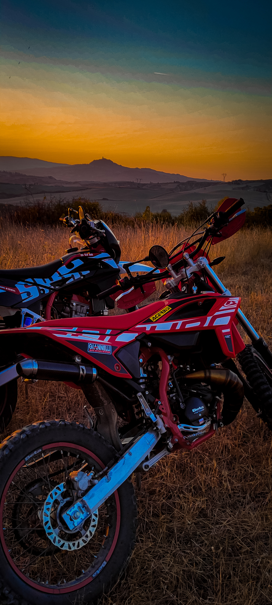
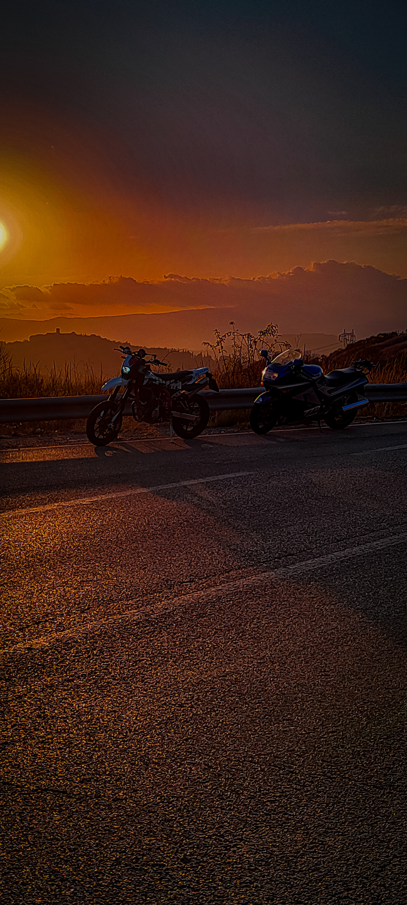

MOTO
Sin da piccolino, ho sempre avuto la passione per i motori
passione che ho attribuito da tutta la famiglia, prima da mio
padre che mi ha cresciuto proprio in sella alle moto,
e in seguito da mio fratello.
Devo tutto a questa passione, la moto per me è un simbolo di
libertà, mentre vado in giro tra le curve dei colli toscani mi
sento libero, soprattutto quando esco con mio padre e mio
fratello o con i miei amici, amo tutto delle moto, l'estetica
le prestazioni, la meccanica che c'è dietro, amo smontare e
rimontare la mia moto più e più volte
amo personalizzare la mia moto per renderla unica
amo sfrecciare tra le curve e sentire l'aria dentro il casco
amo la community dei motori, siamo tutti fratelli con
un' unica passione, questa è bikelife.